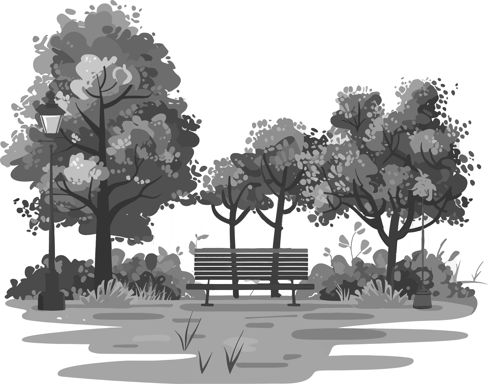

Vídeo del parque que ofrece una vista panorámica de 360º desde el punto de grabación.
Vídeo del parque con vista en 360º
Espacio natural en la ciudad.
.png) Parque de Invierno
Parque de Invierno
Con sus 171.368 metros
cuadrados, esta situado en el barrio de San Lázaro.
En él podrás encontrar| Naturaleza | Deporte |
Bienestar.
Su mayor atractivo es un laberinto formado por más de 600 árboles de
laurel.

Pulmón verde
Aventura y Serenidad en un Solo Lugar.
Oasis verde
.png) Naturaleza y ocio en armonía
Naturaleza y ocio en armonía
Naturaleza y ocio
Es un extenso espacio verde muy versátil, donde se puede disfrutar de la naturaleza, hacer
ejercicio, jugar y relajarse, todo en un entorno hermoso y bien cuidado.
Además, el parque ofrece vistas panorámicas de la Sierra del Aramo.
Naturaleza
 Relajación
El parque se encuentra en una vaguada natural, delimitada por la Autovía A-66 y la Sierra del Aramo. Fue diseñado para ofrecer un espacio verde amplio y multifuncional, con áreas para el deporte,
el ocio y la relajación. El parque es el punto de inicio de la Senda Verde que va a Fuso de la Reina, una ruta popular para el senderismo que sigue la antigua vía del ferrocarril junto al río Gafo.
Parque de Invierno
 Diversión
Diversión
El parque alberga una rica variedad de flora y fauna, lo que lo convierte en un refugio natural dentro de la ciudad. Cuenta con una gran diversidad de especies arbóreas y arbustivas.
La fauna no es muy visible, aunque es posible encontrar diversas especies de aves y pequeños mamíferos. La vegetación densa y variada proporciona un hábitat adecuado para insectos.
Explora las Otras Zonas Verdes de Oviedo

Descubre tu refugio natural en Oviedo, explora los diversos oasis y remansos de paz que la ciudad tiene para ofrecer.
Al igual que en los parques, en estas zonas verdes podrás encontrar Naturaleza | Deporte | Bienestar.

La Flora
Del Parque de Invierno
Originalmente, esta zona era una escombrera, pero gracias a la rehabilitación urbana se transformó
en un hermoso parque y un verdadero refugio natural.
Este parque ha sido sede de varios eventos importantes a lo largo de los años. Estos eventos han
contribuido a hacer del parque, un lugar vibrante y lleno de vida.
En la naturaleza
.png) Tradición y Diversión
Tradición y Diversión
El Parque de Invierno ha sido sede de varios eventos impactantes a lo largo de los años, por
ejemplo:
- Conciertos al aire libre Durante los meses de verano y en las fiestas de "San
Mateo".
- Eventos deportivos Se organizan torneos y competiciones de ping-pong, skate y
ciclismo.
- Actividades infantiles El Palacio de los Niños ha organizado numerosos
cumpleaños, visitas escolares y campamentos infantiles.
Parque de Invierno
Para una tarde de pícnic
Parque de Invierno
Despertar de la primavera

Parque de Invierno
Al cobijo de una sombra
Parque de Invierno
Una tarde de juegos

Parque de Invierno
Una parada en el camino
Espacio verde en la ciudad.
.png) Conoce el Parque de Invierno
Conoce el Parque de Invierno
Conoce el Parque
Podemos ver y disfrutar de las zonas verdes que hay en el parque con toda la familia, ya que cuenta con servicios para poder visitarlo y debido al gran crecimiento de la ciudad está completamente integrado.
Espacio natural en la ciudad
.png) Parque de Invierno
Parque de Invierno
San Lázaro es un barrio dinámico y moderno, aún asi, conserva parte de su patrimonio, como la iglesia de San Lázaro del Camino, que antiguamente se conocía como "Santa María de Cervielles" y en el año 1235 aparece bajo la advocación de San Lázaro.
En él se encuentra la institución sanitaria más antigua de Asturias, en la que se acogían a ancianos y enfermos desamparados. En este mismo emplazamiento ya existía un hospital de leprosos a los que se les llamaba "malatos" y al edificio, "La Malatería". A partir del S. XVI se comienza a llamar "San Lázaro".
Espacio para la diversidad de actividades
Diversión y entretenimiento
Para desconectar de la rutina diaria y pasar un momento de diversión, este parque ofrece diferentes formas de entretenimiento en cualquier época del año. Puedes recorrer la senda del "Fuso de la Reina" tanto a pie como en bicicleta, perderte en el laberinto, realizar circuitos deportivos en los distintos aparatos de deporte, disfrutar de una comida al aire libre, entre otras actividades.
Sobre Nosotros
Somos un equipo de desarrolladores web dedicados a crear experiencias únicas.
Nos
esforzamos por transformar la visita a los parques por excelencia de Oviedo en experiencias
digitales visualmente atractivas, intuitivas y fáciles de usar.
© Copyright 2024.
Todos los derechos reservados.